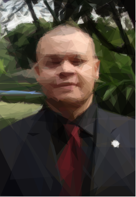

Sergio Monsalve

Perfil
Soy un Ingeniero de Sistemas con mucha curiosidad e interés en aprender.
Me gusta investigar sobre diferentes herramientas, lenguajes y frameworks para crear soluciones a problemas diversos del día a día.
Me gusta hacer parte de equipos de trabajo multidisciplinarios que se enfrenten a retos que permitan crecer tanto al equipo como a sus productos.
Información Personal:
Fecha de nacimiento: Junio 10 1986
Lugar de nacimiento: Medellín, Colombia
Estado civil: Soltero
Dirección: Calle 25A sur No 42B-61 apt 503
Envigado, Antioquia, Colombia
Celular: (+57) 350 8025988
- LinkedIn
- Twitter
- fb
- github
Educación
Universidad EAFIT
(Medellín, Colombia)
Maestría en Ingeniería
Promedio Acumulado: 4.49
Universidad EAFIT
(Medellín, Colombia)
Ingeniería de Sistemas
Promedio Acumulado: 3.94
Colegio La Salle de Envigado
(Envigado, Colombia)
Bachiller Académico 2003
Historia de Trabajo
Inmotion Group
(2020-Actualidad)
Director de TI
Universidad EAFIT
(2016 - Actualidad)
Profesor de Cátedra
Programación de computadores para ingenierías.
Leonisa
(2018-2020)
Analista de Datos
Universidad EAFIT
(2014 - 2017)
Investigador Desarrollador
Desarrollador e investigador para el departamento de Matemáticas Aplicadas
Herramientas para la prevención y predicción de dengue.
Inmotion Group
(2016 - 2017)
Desarrollador Freelance
Diseño y Desarrollo plataforma para el préstamo automático de bicicletas eléctricas.
Universidad EAFIT
(2014-2019)
Departamento de Prácticas Profesionales
Facilitador Educación Experiencial
Universidad EAFIT
(2013)
Consultor Asistente
Desarrollo de la Arquitectura de software para el portal inteligente de Medellín Digital.
Otros Proyectos
Facilitador en talleres de outdoor training.
Purdue University
(2013)
SURF: Summer Undergraduate Research Fellowship at Purdue University
Pasantía de investigación en simulaciones en nanotecnología.
Odesk Freelancer (2012)
Desarrollador de Ruby on Rails
-
Mercadeo Virtual S.A (2011)
Desarrollador Junior
Desarrollos para múltiples clientes.
-
Desarrollo de un sistema para la administración para equipos de laboratorio.
Universidad EAFIT (Medellín, Colombia)
Monitor Académico
Estructura de Datos y Algoritmos
Matemáticas Especiales 3
Habilidades
He desarrollado aplicaciones Stand Alone en Ruby y Python.
He participado en el desarrollo de aplicaciones Web usando Ruby on Rails y Django con manejo básico de JavaScript, HTML, y CSS.
He usado herramientas de versionamiento (Git) en Github, Bitbucket y otros, en los grupos de desarrollo en los que he participado.
He hecho despliegues bajo Linux en servicios de servidores en la nube como Digital Ocean, Amazon entre otros.
He usado dispositivos de sistemas embebidos como Arduino y Raspberry Pi para integrar desarrollos con IoT y otros servicios.
Idiomas
- Español - Excelente (Nativo)
- Inglés - Muy Bueno (TOEIC 940)
Logros
- Proyecto de Grado: Implementación, Instalación y Uso de las Librerías Boost para el centro de computo científico Apolo, Ingeniería de Sistemas, Universidad EAFIT 2013.
- Representante Estudiantil ante el Consejo Directivo, Universidad EAFIT, 2011-2012
- Presidente de la Organización Estudiantil, Universidad EAFIT, 2012
- Vicepresidente Gestión Social y Formación Integral, Organización Estudiantil, Universidad EAFIT, 2010 y 2011
Actividades Extracurriculares
- Director de varias actividades académicas, culturales, recreativas y sociales en la Organización Estudiantil de EAFIT
(Concurso Fotografía DIAS EAFIT 2009, el Congreso Nacional de Estudiantes de Ingeniería de Sistemas, CNEIS 2007, entre otros)
- Miembro del Grupo de Estudiantes para el Mejoramiento de la Ingeniería de Sistemas (GEMIS-OE) 2004-2012
- Fundador Semillero Programación, Universidad EAFIT. 2007-2012
- Coordinador y Asesor del Semillero de Investigación en Sistemas Embebidos SISE (2013 -2017)
Referencias
Escribeme!